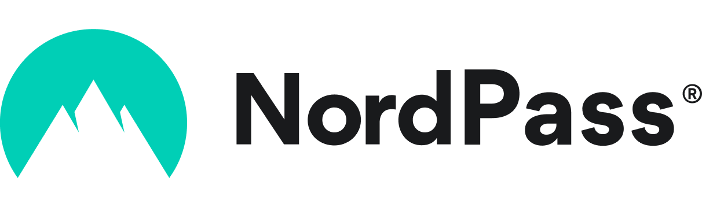
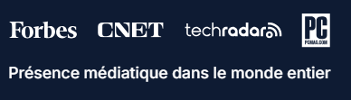
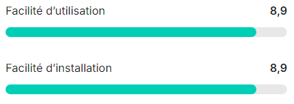
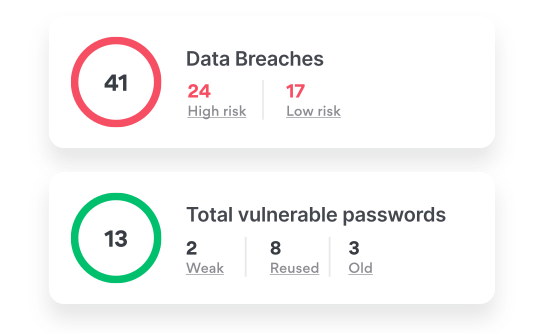
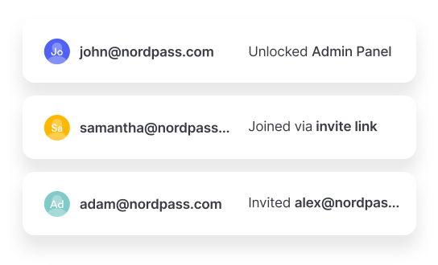

Essayez NordPass
gratuitement !
gratuitement !

ISO 27001 + SOC2 Type 2
NordPass Business est certifié ISO 27001 et SOC 2 Type 2 et a fait
l’objet d’un audit indépendant mené par Cure53.
l’objet d’un audit indépendant mené par Cure53.
Assistance Client Premium 24/7
Notre service d’assistance est disponible 24 h/24, 7 j/7 et résout
rapidement les problèmes.
rapidement les problèmes.
Prêt pour l’avenir
NordPass est le seul gestionnaire de mots de passe utilisant l’algorithme
de chiffrement XChaCha20 et qui bénéficie de l’apprentissage
automatique pour remplir automatiquement les formulaires.
de chiffrement XChaCha20 et qui bénéficie de l’apprentissage
automatique pour remplir automatiquement les formulaires.
Oops! Something went wrong while submitting the form.



Gestionnaire de mots de
passe d’entreprise simplifié
passe d’entreprise simplifié
Découvrez comment protéger et gérer en toute simplicité l’accès numérique
de votre entreprise avec NordPass, un gestionnaire de mots de passe pour les
entreprises. Une configuration simple, une protection puissante.
de votre entreprise avec NordPass, un gestionnaire de mots de passe pour les
entreprises. Une configuration simple, une protection puissante.
À partir de
1,79 $US Utilisateur/mois
1,79 $US Utilisateur/mois

Comment utiliser NordPass, le gestionnaire de mots de passe d’entreprise
Renforcement de la sécurité des mots de passe
Définissez des règles pour les mots de passe dans l’ensemble de l’entreprise et facilitez leur respect par les employés en proposant un coffre-fort de mots de passe pour entreprises qui permet de générer, de stocker et de gérer des mots de passe forts conformément aux politiques définies.

Gestion simplifiée de l’accès
Rationalisez le contrôle d’accès dans votre organisation. Gérez les droits d’accès pour les individus et les groupes, définissez les niveaux d’accès, qu’il s’agisse de la visualisation ou de la modification des informations du compte, et surveillez les activités des utilisateurs via le journal d’activité.

Ajout et suppression faciles de membres
L’intégration des nouveaux membres de l’équipe est facilitée et l’accès aux ressources de l’entreprise est sécurisé grâce à NordPass. Lorsqu’un employé quitte l’entreprise, révoquez tous les accès en un seul clic et transférez-les à son remplaçant en toute fluidité.

Simplification des flux de travail des employés
Optimisez les opérations quotidiennes en permettant un accès fluide aux comptes et une gestion simple des mots de passe. Offrez des outils à votre équipe pour lui permettre de remplir automatiquement les identifiants de connexion et de les partager en toute sécurité.
Un respect des réglementations plus simple à mettre en œuvre
Simplifiez la mise en conformité avec les réglementations en matière de cybersécurité telles que ISO 27001, SOC 2 et HIPAA.
NordPass s’intègre également à Vanta pour assurer la synchronisation avec les flux de travail liés à la conformité.
NordPass s’intègre également à Vanta pour assurer la synchronisation avec les flux de travail liés à la conformité.
Pourquoi choisir NordPass ?
La sécurité transparente et rentable avec NordPass, l’outil de gestion des mots de passe. Pas de verrou payant caché, mais une protection claire et évidente. Bénéficiez d’une synchronisation fluide entre les appareils et d’une assistance de premier ordre.

La sécurité ne doit pas être complexe



Les informations sont extraites des comparatifs de données publiées par G2 le 07/06/24. Consultez le site Web de G2 www.g2.com pour plus d’informations.

Un excellent gestionnaire de mots de passe qui surpasse presque tous les autres
NordPass offre une expérience quasi transparente adaptée à une utilisation quotidienne, en simplifiant considérablement les processus de création de compte et d’identification. Il est très facile de commencer et de mettre en œuvre ce système dans une entreprise. L’utilisation au sein d’un navigateur facilite grandement l’intégration dans les flux de travail existants pour tous les collaborateurs.
- Jonathan B.
PME (51 à 1000 salariés)
Les mots de passe en toute simplicité.
J’apprécie surtout la simplicité de la plateforme et la possibilité de stocker en toute sécurité tous mes mots de passe en un seul endroit. Elle est facile à utiliser et l’assistance client a été excellente pour m’aider à démarrer.
- Utilisateur vérifié dans le secteur des hôpitaux et de la santé
Entreprises (> 1000 employés)
Gain de temps et tranquillité d’esprit.
Nous avons gagné beaucoup de temps.La possibilité d'intégrer de nouveaux membres de l'équipe et de leur fournir un accès instantané à tous les comptes dont ils ont besoin, sans avoir à partager des informations sensibles, s'est avérée incroyablement utile.Le générateur de mots de passe aléatoires nous a permis de nous assurer que nous ne réutilisions pas les mots de passe.
- Dennis D
Petites entreprises (50 salariés ou moins)
Fonctionnalités du gestionnaire de mots de passe professionnel conçues pour le confort des employés
Fournissez à votre entreprise des outils de sécurité simples et puissants qui protègent votre activité sans ajouter de complexité au flux de travail.
Tableau de bord de sécurité
Surveillez la sécurité de votre organisation dans le tableau de bord de la sécurité. Évaluez la qualité des mots de passe en fonction des politiques de l’entreprise, identifiez les fuites de données et gardez une longueur d’avance grâce à des alertes en temps réel.

Outil d’authentification intégré
Simplifiez la sécurité avec NordPass Authenticator, qui intègre les mots de passe et les codes TOTP au même endroit pour un accès fluide. Améliorez l’efficacité et les capacités de partage, en garantissant un accès sécurisé aux comptes.

Dossiers partagés
Rationalisez la collaboration avec les dossiers partagés. Partagez facilement au sein des équipes les identifiants de connexion, les notes et les informations de paiement dans des dossiers. Organisez les flux de travail, augmentez la productivité et fournissez un accès sécurisé aux informations vitales.
Journal d’activité
Obtenez des informations sur les activités des utilisateurs en suivant les mises à jour d’accès afin de repérer les comportements inhabituels. Le journal d’activité enregistre chaque action avec des filtres avancés. Simplifiez la conformité et renforcez la sécurité grâce à des journaux faciles à lire.


Intégrations transparentes
Développez la pile informatique de votre entreprise. Le logiciel de gestion des mots de passe NordPass est compatible avec les principaux fournisseurs d’identifiants tels que Entra ID, MS ADFS, Okta et Google Workspace.
En savoir plus